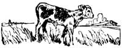
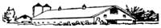
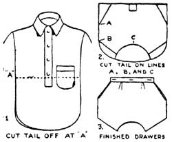
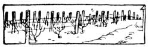
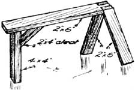

Reprinted by permission from Successful Farming , copyright 1924, Meredith Corporation. All rights reserved.
Alfalfa hay, shelled corn and skimmilk is the ration George Kibby of Audubon county, Iowa feeds his young calves. He gets forty calves a year from his herd of grade dairy cows.
For the first four days the calves are allowed to run with their dams. Then they are put on whole milk to which a little skimmilk has been added. The amount. of skimmilk is gradually increased until at the end of two weeks no more whole milk is fed. Kibby gets them started on shelled corn by throwing a handful of it in the pail of milk. When they have finished the milk, they start in very readily with the corn. Alfalfa hay is kept before them all the time. In spring and summer, when old enough, they get the run of the pasture.
Kibby raises only the heifer calves. During the summer he can get from three to four dollars for bull calves, but he gives them away in winter because there is no market for them at that time. "It does not pay to fatten them for veal," says Kibby "During the six weeks or two months that it takes to fatten them, they should have at least ten quarts of whole milk a day and fifteen quarts would be better. When milk brings me ten cent's a quart, you can see at once that it wouldn't pay me. They could be fed skimmilk, but they will not fatten on that."-W. C. M., Iowa.
With a good stand of soybeans in the cornfield, is tankage required for most economical gains on hogs Last year the Iowa experiment station ran fourteen shotes weighing around 143 pounds each for thirty-five days on corn in which there was a good stand of Manchu soybeans. A similar group was fed the same way except for the addition of tankage self-fed.
When corn grain in the field was figured at 61 cents a bushel, soybeans in the corn at 75 cents per acre, and tankage at $65 a ton, it was found that the more economical gains were made by the tankage-fed pigs and the gains per bushel of corn were likewise greater.
Soybeans in the cornfield were not enough to balance the ration of ear corn properly and economically; the addition of tankage increased the daily gains some forty percent and reduced the cost of 100 pounds of gain from $5.84 to $5.38.
Skimmilk, buttermilk or other good supplements would serve the same purpose as the tankage. Both groups had access to a mineral mixture consisting of salt 20 pounds, ground limestone 40 pounds, spent bone black 40 pounds and potassium iodide one-half ounce to 100 pounds of mixture.
Children's drawers may be made for small children for everyday wear from the tails of discarded blue work-shirts. Cut off the tails as in diagram 1, having previously ripped off the pocket with a safety razor. Then shape them according to diagram 2, using a pair of drawers of the right size to measure by. Hem sides, lap over and overcast. Put bands on top and buttonholes. Sew together with a French seam. Hem bottoms. If desired, a band the color of the little ones' dresses may be used on the bottom, especially if the drawers are made from blue percale or apron gingham. I always put bands on the tops of children's panties for every-day wear instead of using elastic as my physician has told me that the continued wearing of the tight elastic may cause harm in later years.-Mrs. L. A. D.
When does skink fur become prime? Or when can we begin trapping? Also, what is the best way of removing the odor the clothes?-N. D., Wis.
The fur of the skunk usually is in good condition early in November, but that will depend a great deal on weather conditions. The skunk is one of the first fur bearers to become prime. The odor can be removed from the hands and clothing by the use of gasoline.
A couple of years ago a friend of mine who lead a considerable acreage of grapes found that there was an unusually large amount of winter-killing.
The only explanation we could hit upon was that there was too much water in the soil at the season when grapes should be hardening off.
You cannot get away from some winter injury in seasons of unusual severity, but year in and year out injury can be lessened by first draining land that needs it if grapes have by chance been put on ground a shade off in this respect. Next stop cultivation in July or August and seed buckwheat, oats, barley, or wheat, which will tend to try out the soil and at the same time not shade the ground too much.
If the work that may be done in winter is taken care of the work in the spring when we are rushed will trouble us much less. Trash and old stalks of tomatoes and potatoes should be gathered and b caned or made into a compost heap. Manure should be spread, and the earlier the better if it is at all fresh, the rotted manure is better spread nearer time when the plowing is to be done in the spring. Then when soil is dry enough and frost is out of the ground any time after New Year the ground may be plowed and it will settle enough to be just right for planting. Seeds will germinate much more certainly and grow off better in a fairly firm soil, and plowed soil will dry out after spring rams and may be worked without loss of this vital time when seeds must be planted for early garden. If all this work is out of the way, the garden tools bright and well sharpened, trellis material all ready to put in place, stakes for things needing them, and poles for the beans and peas all handy, things will move smoothly and we will avoid the discomfort of having the work behind and crowding us, while weeds shout for joy, and crusts form to dissipate the moisture.-L. C.
There is a particular advantage in owning a sawhorse like the one shown when it is to be used out of doors. The ground is seldom level, and the horse with four legs tips back and forth when one attempts to use it, unless one leg is blocked.
The horse is made in the usual way, with the exception of one end. Here a single leg made from a 4x4 supplants the two. It is braced with a short piece as shown.
Fir is ideal for making this sawhorse because it is tough, firm and relatively light.
The third leg in no way prevents its use on floors and other level surfaces.-D. R. V.
When cooking very, sour fruits, a very little salt added will make less sugar necessary.
To prevent splashing when frying meat, sprinkle a little salt in the pan before putting the fat in.
Flat silver may be nicely cleaned in the water in which potatoes have been boiled.
|
 |
 |
 |
|
 |
 |
|